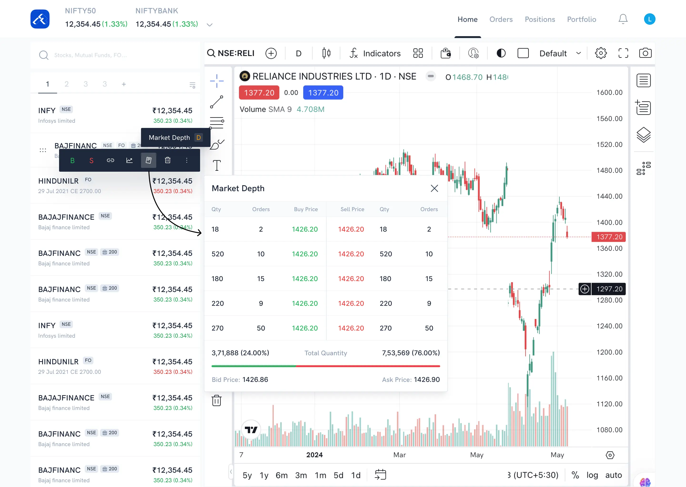
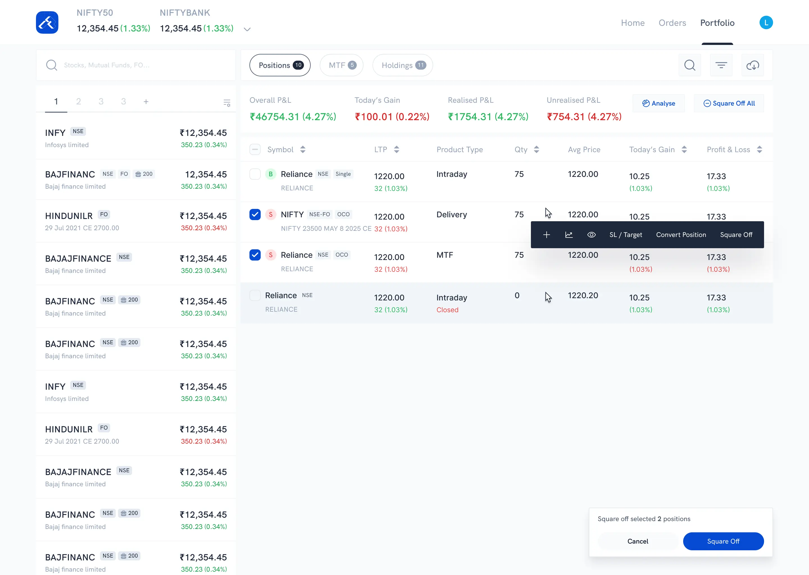
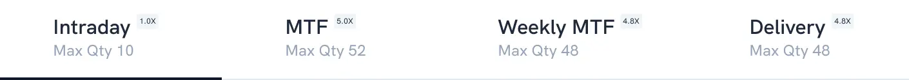
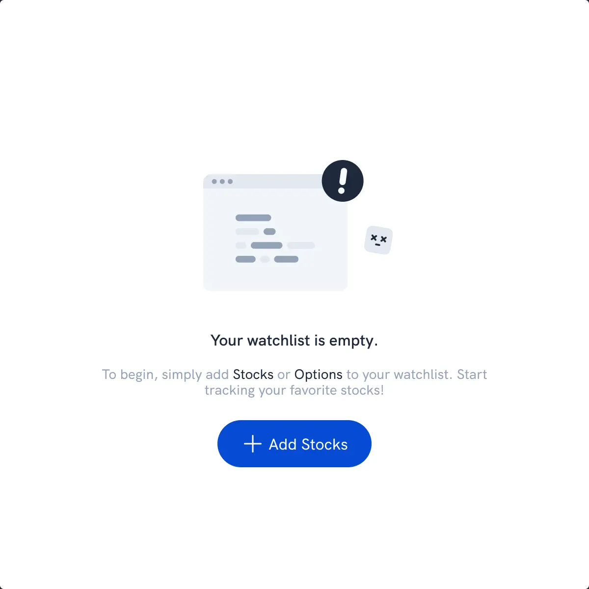
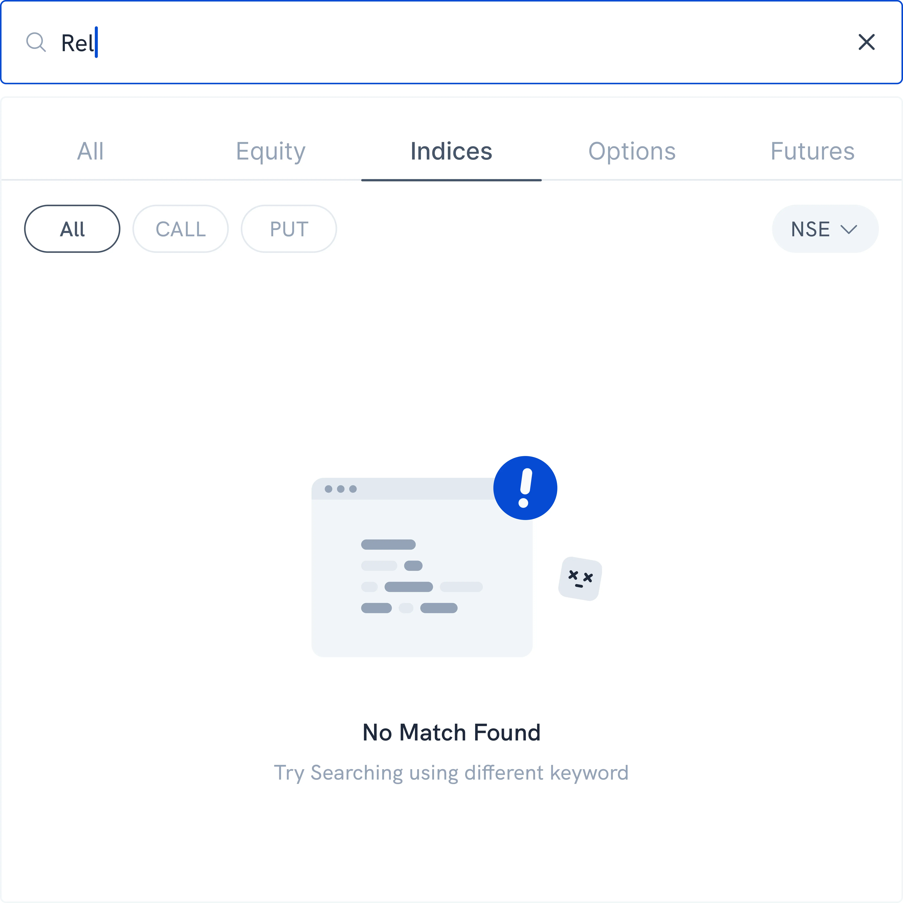
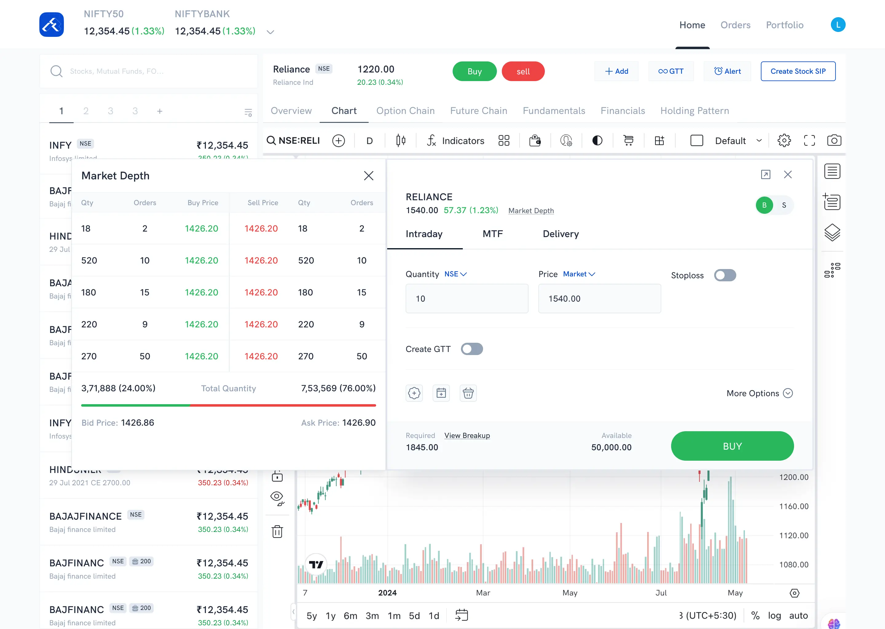
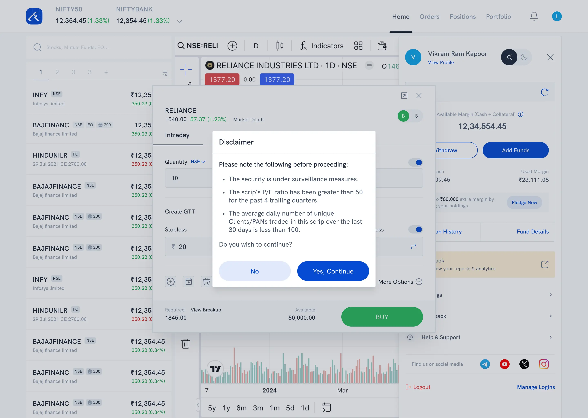
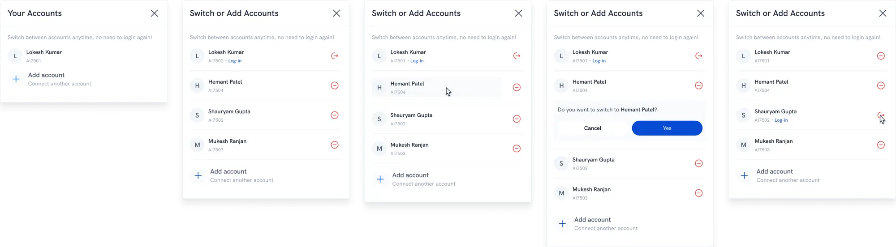

The shell that never changes: ticker, watchlist, nav.
UI case study · Rupeezy web terminal · Sole designer
The desktop trading terminal: chart, watchlist, and orders on one screen.
There was one app, and it treated a small trade and a large one the same way, one screen at a time. Nobody had asked for a second product. I designed one anyway, for the workflow mobile couldn’t hold.
View liverupeezy.in/webLive product may have evolved since I designed it.
Layout
The rule that had to hold
A phone can show you one thing well. That’s enough to check a price. It’s not enough to place a trade, where you need the chart, the watchlist, and your open positions in view at the same time, not one after another.
So before I designed a single screen, I made one decision everything else had to obey: the index ticker, the watchlist, and the nav stay fixed, no matter what’s in the center panel. Every other screen was free to change under me. Those three weren’t allowed to.

Different screen, same frame.

Different screen, same frame. The ticker and watchlist never move.
Foundations
System rules
I could have let color mean whatever a screen needed it to mean. I didn’t.
Green is buy, red is sell, everywhere, badge, button, P&L, candle, and nowhere else in the product. The moment a color is allowed to mean two things, it stops being something a trader can read in a glance. So it only ever means one.

Same color, three places, one glance.
The obvious version of this screen makes the trader do the math.
I built a badge instead. Intraday 1.0x, MTF 5.0x, Weekly MTF 4.8x, Delivery 4.8x sit fixed next to the product. The multiplication happens in the interface, before the trader ever has to do it themselves, with money already on the line.

The multiplier is a badge, not a calculation.
A watchlist and an order form will fight over the same layout if you let them.
I gave them different ones on purpose. The watchlist stays tight, row after row, because scanning fast is the entire job. The order form spreads out, one field at a time, because a wrong field costs real money and earns the extra half second it costs to read carefully.
I had a choice with the surveillance disclaimer: a passive banner the trader could scroll past, or a wall in front of the one button they came for.
I chose the wall. It’s worse for speed, and that’s the point. The one moment speed shouldn’t win is exactly the moment this modal exists for.
I could have written a custom empty state for the watchlist and another one for search.
I used the same illustration and the same copy for both instead. Reusing an interface someone already understands beats teaching them a new one for no reason.

Empty watchlist.

No search results. Same illustration, same copy.
States
Two components, the same discipline
The obvious way to handle four product types and three order types is four or five separate screens, each one simpler on its own. I didn’t build it that way. I built one Order Window and made it carry all of it, because switching screens mid-trade costs more than a longer form does.
Twenty-eight states came out of that one decision. Buy and sell. Four product types, each with its own margin rule. Three order types, each with its own set of fields. Three interruptions, a disclaimer, an insufficient-funds warning, a confirmation, that can land mid-flow without warning. Same spacing, same button weight, same way of explaining why a field is even there, whichever of the twenty-eight you land on.

A routine limit order.

A flagged security stops you here first.
Positions: tight rows, inline actions.
The account switcher made the same call, on a smaller stage. Five states live in one panel, because splitting “no accounts yet,” “several accounts to choose from,” and “confirm this switch” into separate screens would have meant relearning the interface for each one. Different problem, built months apart from the Order Window, same decision holding both.

Five states, one panel.
Handoff
A cleaned copy of the working file, the screens shown above and a few more.
What’s next
What I’d still add
Dark mode already exists in the product, you can see the toggle in the Profile panel, but it’s not on this page yet. Saying “the system holds at scale” should mean showing both themes side by side, not just pointing at a toggle. Adding it once those screens are exported.